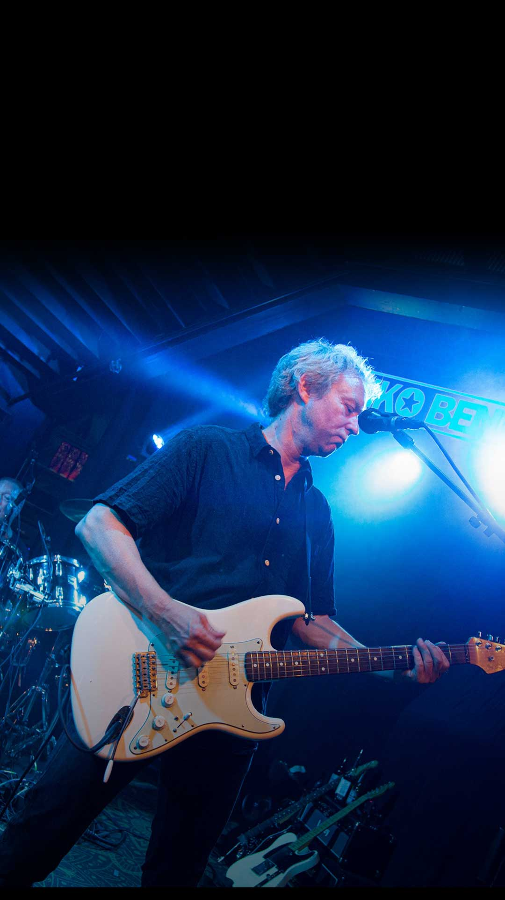
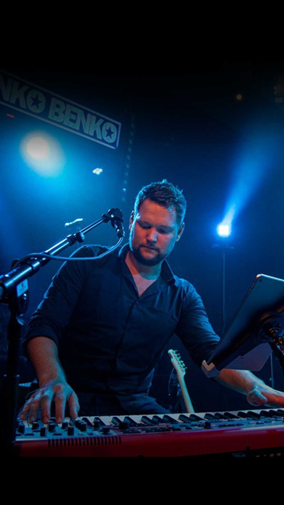

{kind=link}
{kind=link}
{kind=link}
Cirka 40 ord
Henko Benko är partybandet från Västerås som fyller dansgolvet med välkända hits, pop, rock och allsång. Fyra rutinerade musiker, nära publikkontakt och fullt ös från första låten till sista extranumret.
För arrangörer & press
Här samlar vi pressbilder, logotyper, presentationstexter och teknisk information. Materialet får användas för att marknadsföra en bokad eller avtalad spelning med Henko Benko.
Pressbilder
Klicka på en bild för att öppna originalfilen. Gruppbilden är förstahandsvalet när hela bandet ska presenteras.
 Gruppbild · JPG Ladda ner ↓
Gruppbild · JPG Ladda ner ↓
 Henke · JPG Ladda ner ↓
Henke · JPG Ladda ner ↓
 Andy · JPG Ladda ner ↓
Andy · JPG Ladda ner ↓

Benk · JPG Ladda ner ↓
Gus · JPG Ladda ner ↓Helst liggande format, minst 2400 pixlar bred och utan text eller vattenstämpel.
press/henko-benko-live-bred.jpg
Logotyper
Använd vit logotyp på mörk bakgrund och svart logotyp på ljus bakgrund. Ändra inte proportionerna.
Presentationstexter
Två färdiga längder för kalendarium, evenemangssidor och sociala medier. Anpassa datum, plats och praktisk information efter arrangemanget.
Henko Benko är partybandet från Västerås som fyller dansgolvet med välkända hits, pop, rock och allsång. Fyra rutinerade musiker, nära publikkontakt och fullt ös från första låten till sista extranumret.
Henko Benko är fyra rutinerade musiker från Västerås som har spelat tillsammans sedan 2009. Med en bred blandning av pop, rock, svenska favoriter och låtar som hela publiken kan sjunga med i bygger bandet festen tillsammans med människorna i rummet. Henko Benko har lång erfarenhet av företagsevent, festivaler, krogar och privata fester. Oavsett scen är målet detsamma: nära publikkontakt, ett fullt dansgolv och en kväll som ingen vill ska ta slut.
Teknisk information
Här ska arrangören kunna hämta aktuella dokument. Platshållarna ligger kvar tills de färdiga PDF-filerna finns.
Ljud, ljus, backline, monitorer, el, tider och kontaktperson.
downloads/henko-benko-teknisk-rider.pdfPlacering av musiker, instrument, mikrofoner, monitorer och anslutningar.
downloads/henko-benko-scenplan.pdfPraktiska önskemål kring loge, mat, dryck, parkering och inlastning.
downloads/henko-benko-hospitality.pdfFrågor eller annat format?
Vi hjälper gärna till med rätt fil, anpassad presentation eller tekniska frågor inför spelningen.